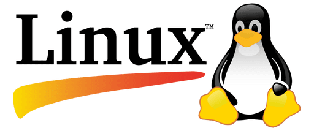

История ОС Linux
Плюсы и минусы ОС Linux
История Linux начинается в 1991 году, когда финский программист Линус Торвальдс стал разрабатывать ядро операционной системы для своего компьютера. Свои наработки он выложил на сервере, и это стало ключевым событием в истории Linux. Сначала десятки, потом сотни и тысячи разработчиков поддержали его проект – общими усилиями на свет появилась полноценная операционная система.
Эмблемой Linux стал Такс (Tux) – пингвин, нарисованный в 1996 году программистом и дизайнером Ларри Юингом. Впрочем, идею использовать именно пингвина придумал сам Линус Торвальдс. Теперь Такс является символом не только Linux, но и свободного программного обеспечения в целом.
Корни Linux уходят в два других проекта: Unix и Multics, которые ставили своей целью разработать многопользовательскую операционную систему.
Unix – это собрание кроссплатформенных многопользовательских и многозадачных операционных систем.
Одна из проблем, коснувшаяся Unix, – наличие разных версий и множества программ, которые писали разработчики под свои нужды. Из-за низкой совместимости программы, работающие с одной версией Unix, могли не работать на машинах с другими версиями. В итоге было решено создать общий документ со стандартами, которым должны следовать разработчики.
В 1983 году было объявлено о создании GNU (GNU’s Not UNIX), Unix-подобной операционной системы.
Ричард Столманн (Ричард Мэттью Столлман, также упоминаемый как rms, — основатель движения свободного программного обеспечения, проекта GNU, Фонда свободного программного обеспечения и Лиги за свободу программирования) также основал движение свободного программного обеспечения и сформулирован четыре права, которыми должен обладать пользователь: он может запускать программу для любых целей, он может изучать программы и изменять их согласно своим потребностям, он может распространять программу, чтобы помочь другим, и он может публиковать улучшения программы, чтобы помочь сообществу в целом. Все это говорило о том, что исходный код программы должен быть доступен всем.
Именно эта мысль вдохновила Линуса Торвальдса, создателя Linux, начать в 1991 году работу над своей операционной системой. Linux, как и GNU, это Unix-подобная система, то есть система, появившаяся под влиянием Unix.
По факту Linux до сих представляет собой ядро Unix-подобной операционной системы, которое выполняет различные низкоуровневые задачи. В то же время проект GNU нуждался в ядре – разработка Линуса Торвальдса была очень своевременной.
Сейчас благодаря своей гибкости Linux используется на множестве разных устройств, начиная с компьютеров и заканчивая серверами и мобильными устройствами.
ОС Linux, плюсы
Стоимость Linux
Сравнительно низкая стоимость. Большинство копий Linux есть в Интернет, в свободном доступе. То есть, стоимость Linux это грубо говоря стоимость интернет-трафика и цена флэшки, на которую нужно записать скачанный файл.
Вирусы для Linux
Практическое отсутствие, по крайней мере, на сегодняшний день, вредоносных программ для этой платформы. Что позволяет избежать дополнительных расходов по предотвращению или ликвидации ущерба от вредоносных программ.
Независимость от разработчика
Если вам потребовалась какая-то функциональность, отсутствующая в ОС Linux, вы можете ее добавить своими собственными усилиями, конечно если вы умеете программировать. Такая возможность есть благодаря тому, что ОС Linux распространяется не только в бинарном виде, но и в исходных кодах, причем нет никаких запретов на модификацию этих исходных кодов.
ОС Linux, минусы
Оборудование под Linux
Поддержка стороннего оборудования заметно хуже чем у ОС Windows, в особенности внешнего, такого как, например принтеры или USB устройства. Вполне реальна ситуация, когда вам не удастся использовать какое-то оборудование под ОС Linux. Но проблема в значительной степени решаема, за счет более тщательного подхода к выбору оборудования. Да и ситуация с драйверами для Linux каждым годом улучшается, по мере того, как Linux все шире распространяется в мире.
Программы для Linux
Прикладных программ для Linux примерно на порядок меньше, чем для платформы Windows. Более того, если речь идет о некоторых программах - безусловных лидерах в своих прикладных областях, то под ОС Linux нет ни соответствующих версий самих этих программ, ни других, сопоставимых по функциональности программ. К таким прикладным программам относятся продукты компании Adobe, программа инженерного проектирования AutoCAD, распознавание текстов FineReader, пакет Microsoft Office. Однако программы уровня Microsoft Office или Adobe PhotoShop необходимы далеко не всем. Частично этот недостаток можно компенсировать за счет того, что некоторые Windows-программы можно запустить на платформе Linux
Специалисты по Linux
Значительно меньшее, чем для платформы Windows, количество хороших или приличных специалистов. Так что, если вам потребуется помощь, то найти человека, достаточно хорошо разбирающегося в Linux, будет не так просто и стоимость услуги может быть гораздо выше чем у ОС Windows
Отсутствие глобальной стабильности
Большинство версий имеют цикл выпуска с интервалом всего лишь полгода. Для ОС это очень короткий срок. В результате, по факту, любая версия Linux, перманентно находится в стадии бета-версии. Несмотря даже на наличие так называемых "стабильных" версий. Впрочем, с этим можно бороться - ведь можно не обновлять Linux до новых версий.
Статистика по MacOS
Linux является бесплатной и открытой операционной системой с открытым исходным кодом, которая относительно недавно начала набирать популярность среди пользователей по всему миру. Данные о использовании Linux обычно сложно определить точно, поскольку проект находится в действительности вне контроля любых компаний, и в значительной степени разрабатывается сообществом. В целом, Linux может не быть наиболее распространенной операционной системой в мире, но благодаря бесплатности, открытому исходному коду и достаточно высокой производительности, она становится всё более заметной и популярной на рынке программного обеспечения.